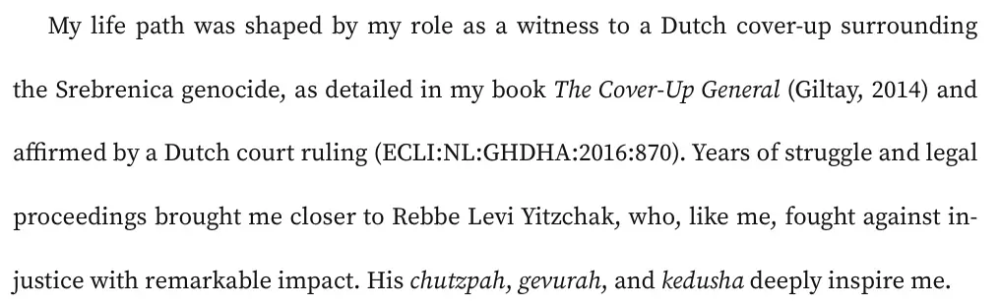

Prueba · Ensayo
El intrépido Berdichever: ensayo para el beit din, 12 de agosto de 2025
El pasaje
«Mi trayectoria vital ha estado marcada por mi papel de testigo de un encubrimiento neerlandés en torno al genocidio de Srebrenica, tal como se expone en detalle en mi libro The Cover-Up General (Giltay, 2014) y como confirmó una resolución judicial neerlandesa (ECLI:NL:GHDHA:2016:870). Años de lucha y de procedimientos judiciales me acercaron al rebe Levi Yitzchak, quien, como yo, luchó contra la injusticia con un impacto notable. Su jutzpá, su guevurá y su kedushá me inspiran profundamente». Página 3, en la carta al beit din que abre el ensayo. Traducido del inglés; el texto original figura a continuación. The Cover-Up General es el título de la edición inglesa del libro El general del encubrimiento.
Texto original
“My life path was shaped by my role as a witness to a Dutch cover-up surrounding the Srebrenica genocide, as detailed in my book The Cover-Up General (Giltay, 2014) and affirmed by a Dutch court ruling (ECLI:NL:GHDHA:2016:870). Years of struggle and legal proceedings brought me closer to Rebbe Levi Yitzchak, who, like me, fought against injustice with remarkable impact. His chutzpah, gevurah, and kedusha deeply inspire me.” El documento está escrito en inglés; el texto se reproduce tal como figura en él.

Por qué importa este documento
Este ensayo sobre el mandamiento de perseguir la justicia es uno de los textos que Giltay presentó al tribunal rabínico, en los años en que, según su biografía en este sitio web, respondió a la obstrucción venida de las altas esferas con una profundización espiritual. Es una reflexión sobre el rebe Levi Yitzchak de Berdichev, del siglo XVIII, que defendió a su comunidad frente a un soberano y frente al propio cielo. En la carta que lo acompaña, Giltay vincula ese ejemplo con su propio camino. Por consejo de su rabina, menciona también en el ensayo su papel de testigo de un caso de encubrimiento neerlandés.
Procedencia
- Documento
- The Fearless Berdichever: An Essay on the Spiritual Zecher of Rebbe Levi Yitzchak of Berdichev z’’l
- Autor
- Edwin Giltay
- Destinatarios
- Los rabinos del beit din, como parte del proceso de conversión al judaísmo
- Fecha
- 12 de agosto de 2025 / 18 de av de 5785
- Lugar
- La Haya
- Contexto
- La rabina de Giltay le aconsejó mencionar también en el ensayo su papel de testigo del caso de encubrimiento. Le dio ese consejo durante una clase del proceso de conversión en la que él presentó un PowerPoint sobre el Berdichever el martes 17 de junio de 2025 por la noche
- Tema
- La vida y el legado espiritual del rebe Levi Yitzchak de Berdichev (1740–1809), y el mandamiento judío de perseguir la justicia
- Referencias
- ECLI:NL:GHDHA:2016:870, citado en la carta al beit din y, en la bibliografía, como Tribunal de Apelación de La Haya, sentencia, 12 de abril de 2016
- Idioma
- Inglés
- Páginas
- 28 páginas, con un glosario de términos judíos y una bibliografía
Citado en: la biografía del autor.
Ficha de prueba: https://
Documento: https://
Modificado por última vez el 27 de junio de 2026, consultado el 27 de noviembre de 2026.

Esta página es una ficha de prueba del libro El general del encubrimiento de Edwin Giltay y del sitio web que lo acompaña.